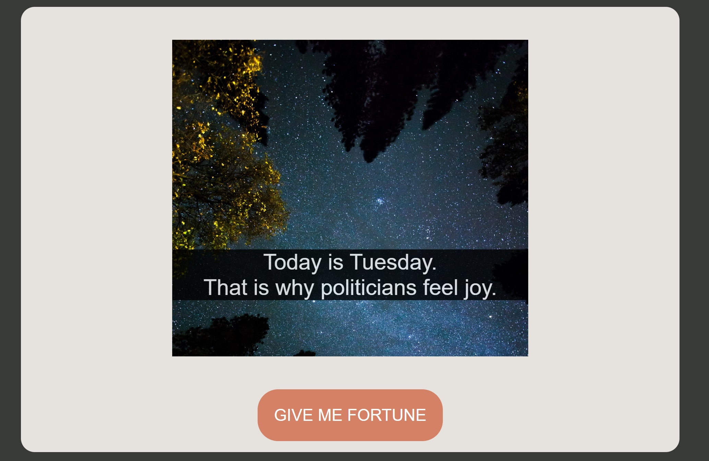
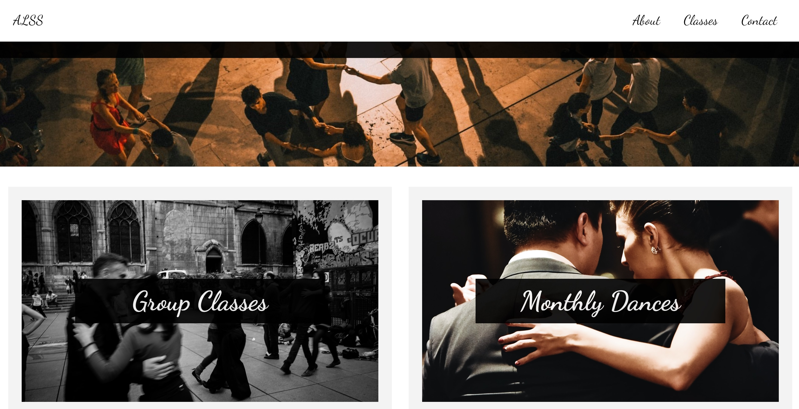

About
Hello! I'm a pianist and writer transitioning to software since mid-2021. I started out by working through the old K&R C language book, and am now on a full-stack development course. I still do play music! Check the contact page for a link to my YouTube channel. Projects here will be updated as I finish up more interesting things. For now, go get your fortune told by following the link.
Projects
Dadaist Fortune Teller

A JS script that pairs a random image with fortunes of increasing strangeness...
Ashland Lindy Swing Society Website

A website made for the Ashland Lindy Swing Society of Ashland, Oregon.